Chapter 4 GitHub Actions Fundamentals

4.1 GHA structure
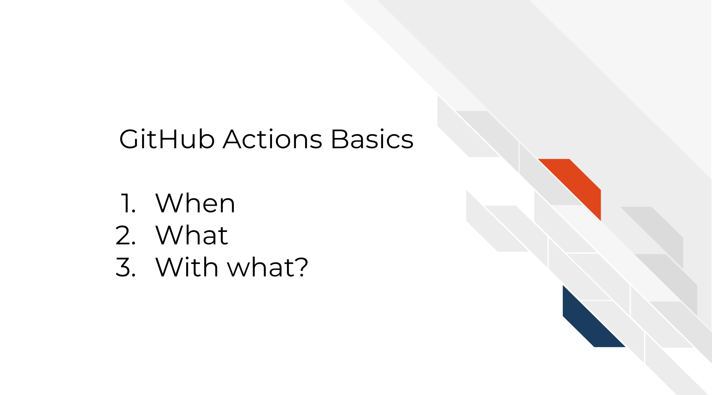
All GitHub Actions involve answering three questions:
- When should a thing run?
- What should be run?
- With what environment should the thing be run?
These questions and other specifications are set by writing a YAML file. YAML files are human readable markup language files. Basically its a list that is easy for humans to read and write and computers can read them too. This makes it good for writing a GitHub Action. Essentially, we’re going to write a YAML file to make a recipe that GitHub will read to know what/when/with what we are trying to do.
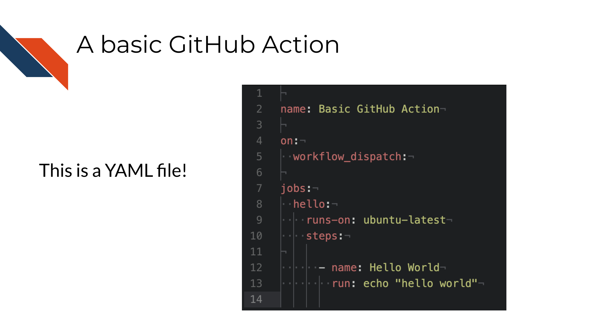
The headlines about working with YAML files:
- Everything is a list (kind of like a JSON file).
- Indentations = subsets of a list
- Spacing is VERY specific! – incorrect spacing will definitely result in errors for your GitHub Action run.
Let’s take a look at an example YAML.
Note that the what comes before a : is generally a name and indent indicate subsets of a list. So in the overall list of food we have sublists of vegetables and fruits. # can be used as a comment and will not be treated as code.
Additionally, : are often names. So citrus is the name for the item oranges and etc.
# A comment here which is ignored
food:
- vegetables: tomatoes
- fruits:
citrus: oranges
tropical: bananasTwo items that every GitHub Action YAML must contain is on: and jobs:.
on:tells GitHub when something should be run. For example “whenever a pull request is opened”.jobs:tells GitHub what should be run. For example “run this bash script”.runs-on: tells GitHub with what environment should this be run. For example “windows-latest”.

4.1.1 on: When a thing should be run
If you are to automate something, step one is to figure out when do you want the thing to happen.
What should trigger your action? For that we use on: in a GitHub Action.

There’s lots of possible answers for when something should be run. The triggers can be a lot of different events on GitHub: pull requests, issues, comments, times of day, etc.
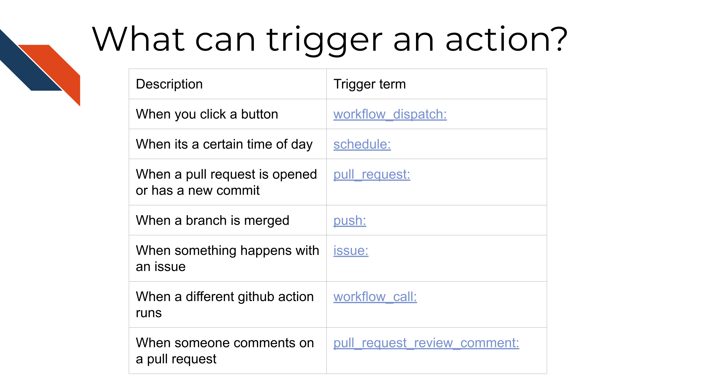
4.1.2 jobs: What should be run
Perhaps even more important, what is the job that this automated task needs to do?

| Description | Trigger term |
|---|---|
| When you click a button | workflow_dispatch: |
| When its a certain time of day | schedule: |
| When a pull request is opened or has a new commit | pull_request: |
| When a branch is merged | push: |
| When something happens with an issue | issue: |
| When a different github action runs | workflow_call: |
| When someone comments on a pull request | pull_request_review_comment: |
Scenario: You are running an analysis using public data that continually has more samples added - You would like the analysis to rerun when new samples are added - You would like to be informed of when the analysis got rerun and what the results were on Slack
That’s totally a thing a GitHub action can do! We will walk through some examples like it!
And here’s the good news, you don’t have to write things from scratch or know ALL the languages. GitHub marketplace allows you to use really cool actions that other people have created. More on this later.
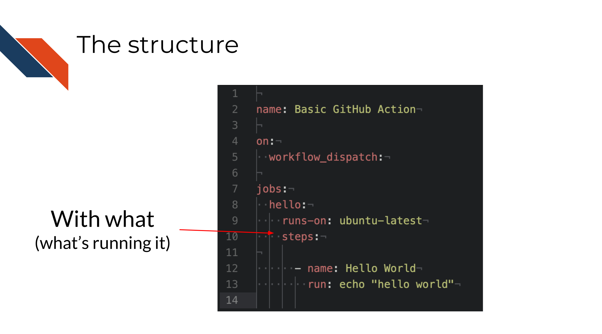
4.1.3 runs-on: with what:
The runs-on: tag specifies with what environment the job is going to be run.
What does this mean? Well let’s start by discussing that the term “cloud” computing is a tad misleading. When we send a job to an online service like GitHub Actions, its not a mysterious vague mass.

Instead, its being sent to a real computer somewhere and that computer is setting up a computing environment to run your job and sends back the results to you through the GitHub website.
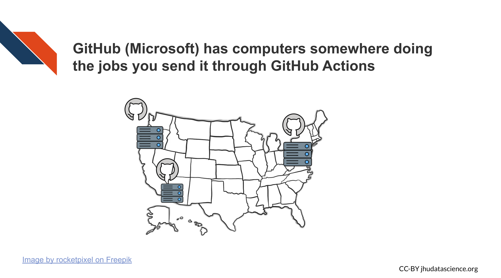
What do we mean by a computing environment? As just like when you work on your personal computer, you install, update, and sometimes delete software in order to run different things, the GitHub Actions computers need to do the same in order to run your code. Although some person from Microsoft isn’t setting up a new physical computer and manually installing software, the specs you give underneath runs-on: tell GitHub Actions what kind of set up to use.
So for example, there are built in operating systems like windows-latest, mac-latest, and ubuntu-latest. You can see more about the default GitHub runners here.
But just like a Windows machine straight out of a box is unlikely to have everything you need to run some code, you may need a more specific computing environment. You can also create custom environments using containerization.
4.1.4 Containerization
A “virtual machine” is basically when your computer creates its own fake computer inside of it. It’s acting like a different computer but it doesn’t have any additional physical parts.
Containers aren’t virtual machines, but they do a similar thing, which is they spin up a computing environment where you can do things. They are called containers because they are isolated from the rest of your computer.
Containerization is useful because it allows us to share our computing environments with others. This is useful because it can be a powerful tool for reproducing analyses if we are controlling our computing environments.
The software you use, and the versions of the software you use can affect the results from an analysis (Beaulieu-Jones and Greene 2017).

Real data and experiments have shown this! Below is a figure from Beaulieu-Jones and Casey S. Greene, 2017 that shows how a microarray data analysis had different results depending on the software versions used (Beaulieu-Jones and Greene 2017).
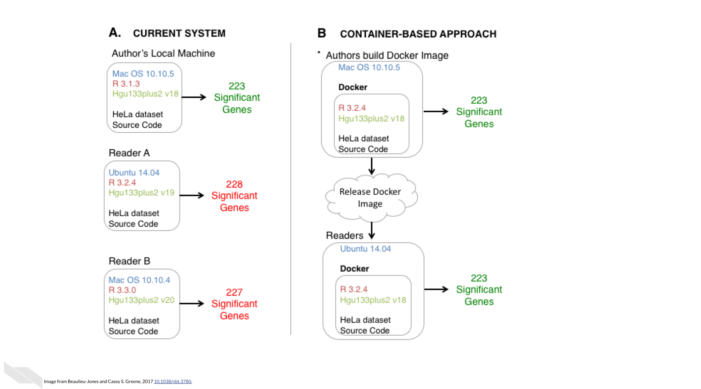
And as time goes on, your computing environment changes; potentially in ways you don’t realize!

Most languages and programs allow you to print out the specifications of your computing environment. See below a “session info” print out from R. What this shows is two different computing environments. Side by side we can see how they differ.

There’s various containerization software programs, that will allow you to share your computing environments but a very popular one is Docker. We can picture how this makes analyses more reproducible.

Docker and other containerization software work by allowing you to take a snapshot of your environment, called an image. This image can be shared and others can use this image to build the container from which they can run the analysis or whatever it is they plan to do.
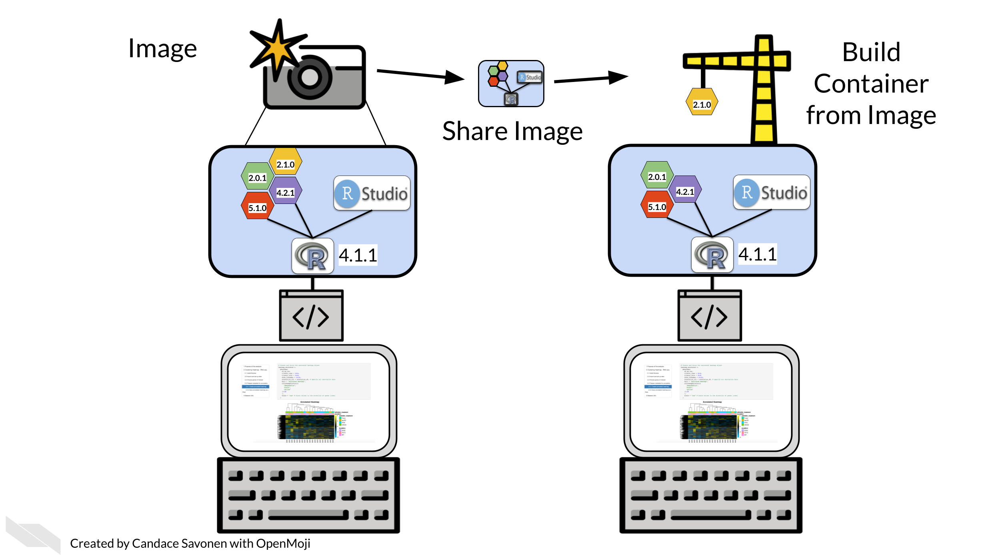

Docker is a whole other world. There’s whole conferences, hackathons, and etc devoted to Docker and other containerization software. It can be a lot to learn. To start, we recommend borrowing other people’s Docker images as much as possible instead of trying to build your own And then install the few packages you need. (more on this in a future chapter)
Super important side note: DO NOT put data that needs to be secured like Personally Identifiable Information (PII) and Personal Health Information (PHI) data on your Docker images! Especially when you share them! They are not meant for this purpose and this data would be exposed!
4.1.4.1 More resources about Docker
4.1.5 Summarizing
- GitHub actions are specified by YAML files in
.github/workflows/folder on a GitHub repository. - The specs from this YAML are used to run a
jobwhen anontrigger specifies it should be run. - The
runs-onspec tells the server what kind of environment it should be run with. - Containers like those made with Docker can help you make custom computing environments.
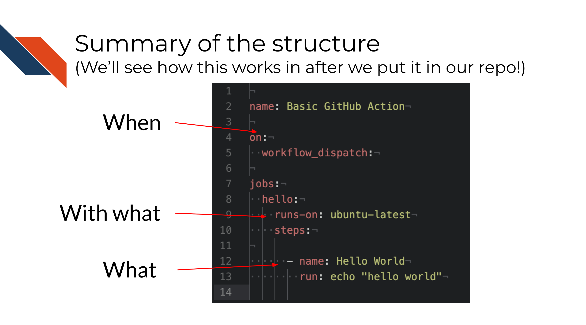
4.2 Exercise 1 - Running your first GitHub Action
Let’s apply what we’ve learned about GitHub Actions by running one!
If you don’t have a standard workflow for how you use GitHub locally, or are unhappy with your current methods for this activity we recommend installing GitHub Desktop
First we need to create a copy of the exercise GitHub repository we will use for this course. Go to
https://github.com/fhdsl/github-action-workshopand click on theUse this templatebutton.
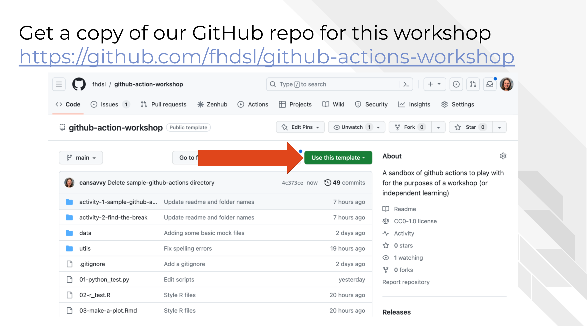
- Fill out the form on this page about where you want this repository to be and what description you want it to have. And click
Create Repository.

- Clone this repository to your local computer.
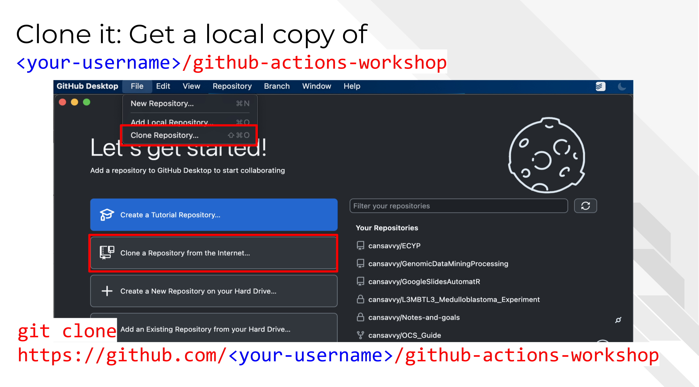
In GitHub Desktop you can do this by clicking the Clone Repository button.
But from command line you can use this kind of command:
git clone https://github.com/<your-username>/github-actions-workshop- Create a new branch by clicking the buttons as shown here or using the command line examples below

cd github-actions-workshop
git checkout -b "first-gha"- Create the specific GitHub Actions folders. Recall that in order to run a GitHub action, GitHub will look for YAML files in a specific location. We will need to create these folders to get going. Use your operating system to create a
.githubfolder and then inside that folder, aworkflowsfolder. Don’t forget thesin workflows or the.in.github– these folder names have to be exactly written this way for your GitHub Action to be found and recognized by GitHub.
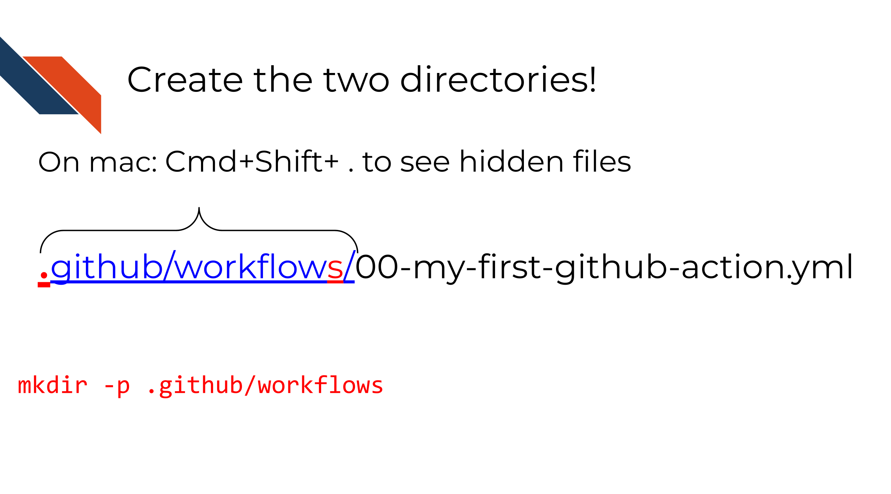
You can use this command to do this:
mkdir -p .github/workflows- Now you will want to move the
00-my-first-action.ymlfile into the.github/workflowsfolder.
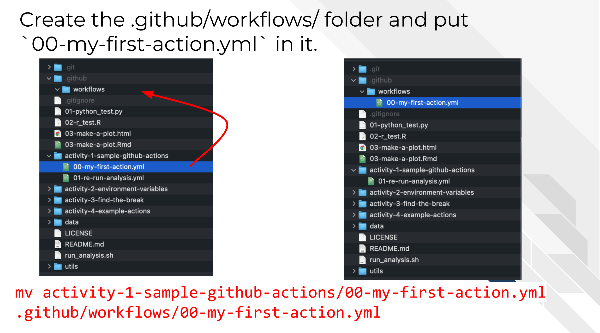
In command line you can do this by using this command:
mv activity-1-sample-github-actions/00-my-first-action.yml .github/workflows/00-my-first-action.yml- Add and commit these changes to your branch. Then you will want to push your branch to the online GitHub repository.

In command line this can be done like this:
git add .github/*
git commit -m "adding first gha"
git push --set-upstream origin first-gha- Open a pull request. In GitHub Desktop you can click this button:
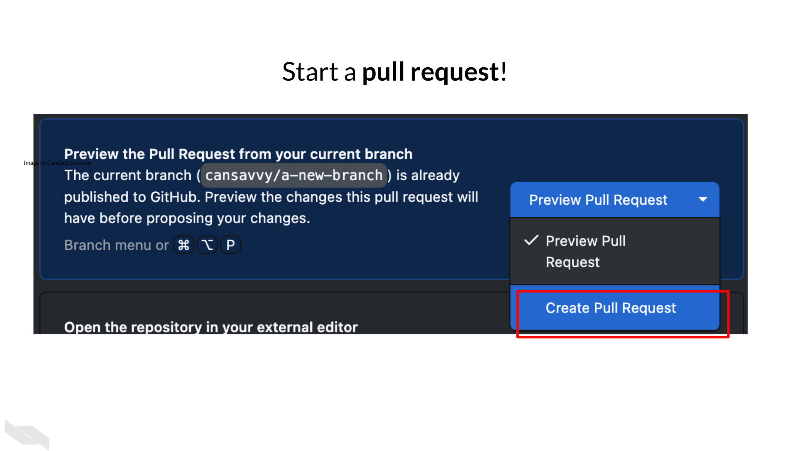
Or just navigate to your GitHub repository online and open a pull request through the website.
- Check your pull request to make sure the changes are what you expect. Then merge it!

- After merging, go to the
Actionstab on GitHub
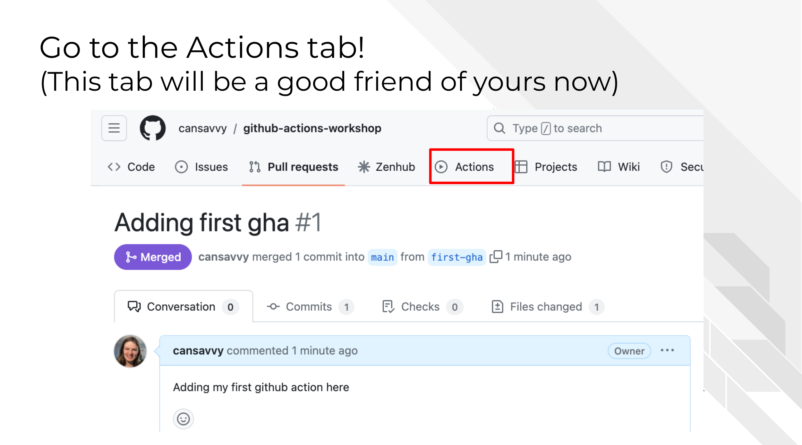
You’ll be come very acquainted with this page if you use GitHub actions. On the left shows the workflows that are available or have been run before.
We should see our new GitHub Action we just merged from our pull request here called “Basic GitHub Action”. Click on that. Underneath this we should now see a blue banner that allows us to click “Run workflow”.

- Click
Run workflowand thenRun workflowagain. Because we made ouron:triggerworkflow_dispatchthis means we have to tell the GitHub Action when to run (which means its not really automated in this case).

Yay!

4.2.1 Checking results of a GitHub Action
Go to the Action tab. You’ll see your newest run of your GitHub Action is logged here. All future GitHub Action runs will have their logs here.

Click on the workflow run log so we can look into it.
To see more run details we’ll click on the job name which in this case is hello.

Click on the dropdown arrows to see even more details on each step.
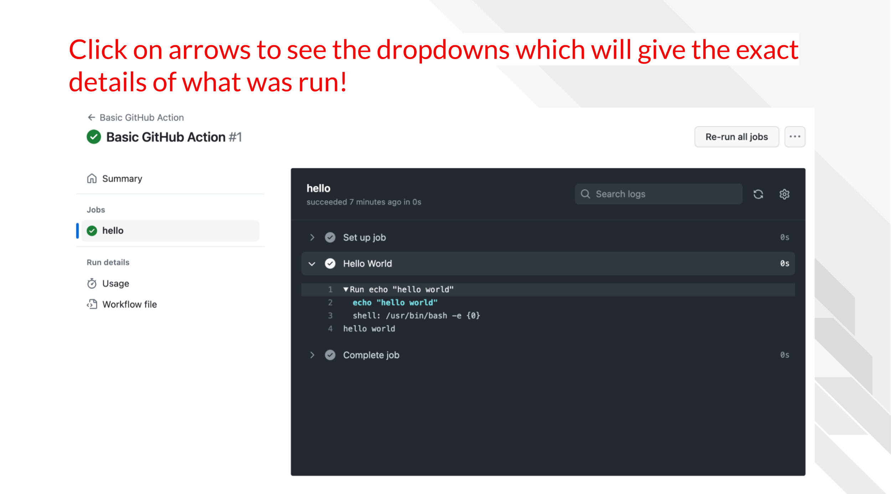
4.2.2 Breaking down the YAML
We can break down how what we wrote in the YAML lead to what is shown in this run’s log.

- We named this Action
Basic GitHub Actionand the log was named that. - The only job being ran was named
helloso in the log it shows up this way underneath theJobsheader. If we had more than one job, those jobs’ names would show up here too. - Each job can contain as many steps as we want. Our one step is named
Hello World. - This step involved running some code using the
run:tag which by default uses bash. - The bash code just echoed “hello world”.
Congrats! You’ve ran your first GitHub Action!
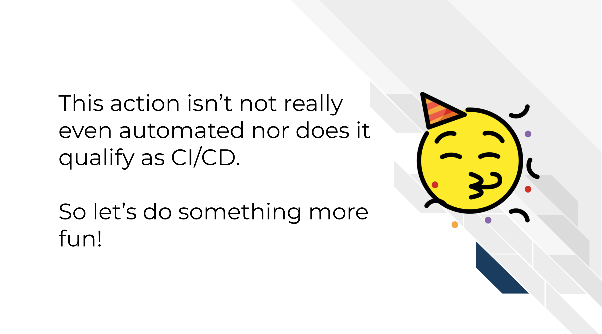
In the next chapter we’ll run something a little more automated and a little more fun to build on what we’ve learned here.